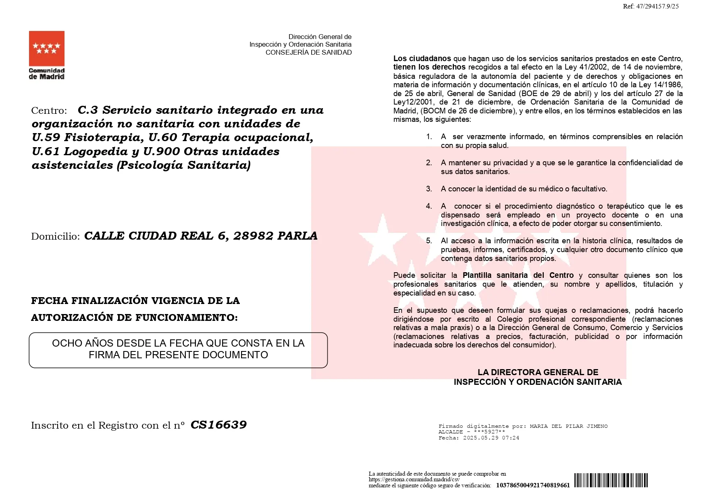
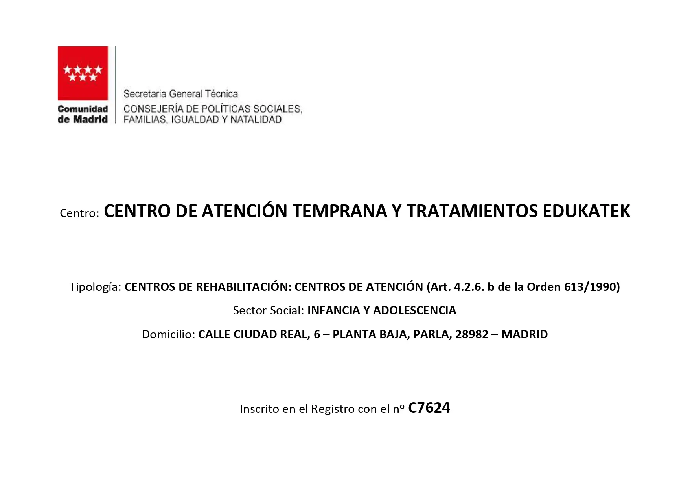
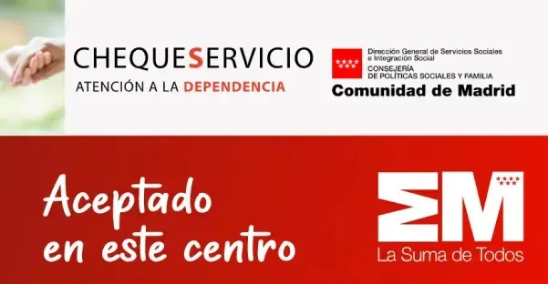
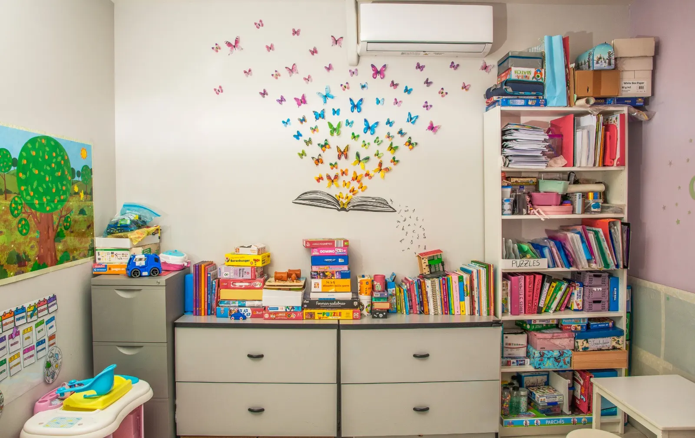
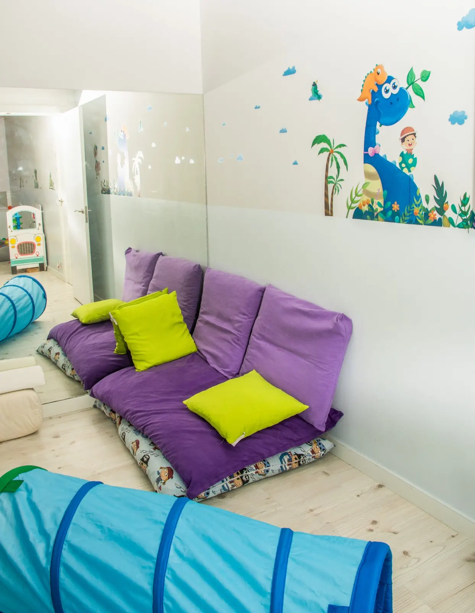

Autorización sanitaria
Centro autorizado para servicios sanitarios y sociosanitarios según la documentación aportada.
Logopedia, psicología y terapias infantiles en Parla con intervención cercana, profesional y coordinada.
Calle de Ciudad Real, 6, 28980 Parla, Madrid
Información del centro y recursos de orientación para familias.

Centro autorizado para servicios sanitarios y sociosanitarios según la documentación aportada.

Centro registrado para atención a infancia y adolescencia, especializado en intervención y acompañamiento integral.

Centro aceptado para cheque servicio, con orientación sobre ayudas y recursos para familias.
Tratamientos y acompañamiento adaptados a cada etapa y necesidad.

Evaluación e intervención en lenguaje, habla, voz, audición, deglución, lectoescritura y comunicación desde la infancia
Más informaciónAcompañamiento psicológico para infancia, adolescencia y familias, con intervención adaptada a conducta, emociones, auto
Más informaciónTratamiento fisioterapéutico para favorecer movilidad, postura, coordinación y autonomía funcional en la infancia y adol
Más información
Intervención para mejorar habilidades funcionales, autonomía, juego, alimentación, vestido, escritura y participación en
Más informaciónTrabajo especializado para ayudar a organizar la respuesta del niño ante estímulos táctiles, auditivos, vestibulares, pr
Más informaciónSeguimos un proceso estructurado para evaluar, intervenir y acompañar cada caso de forma personalizada.
Calle de Ciudad Real, 6, 28980 Parla, Madrid
Sí. Puedes llamarnos o escribirnos por WhatsApp para explicar tu caso y recibir orientación sobre el centro o servicio más adecuado.
Sí. La coordinación con familias, centros educativos y otros profesionales es parte importante del seguimiento.
Sí. Cada intervención se adapta a la edad, necesidades y objetivos del niño, adolescente o familia.